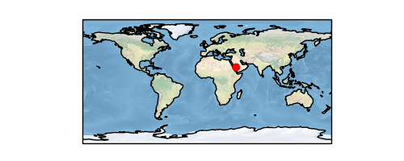
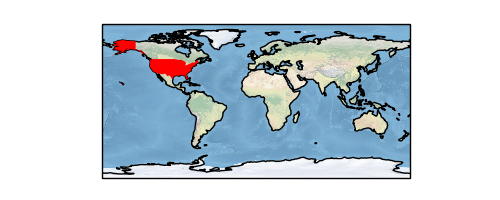
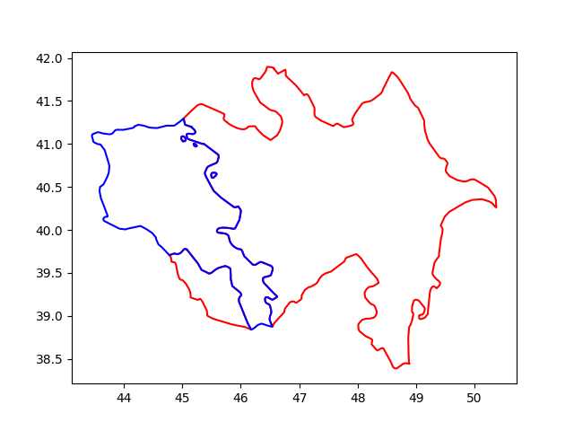

f# Haritalamak
Bu haritalama sistemi ile dünyanın herhangi bir yerini alıp, istenen odaklama seviyesinde göstermek, üzerini işaretlemek mümkün, ayrıca haritanın üzerinde isteğe göre çizgiler, çemberler vs çizilmesine izin veren çağrılar var. Folium arka planda bir Javascript kütüphanesi Leaflet kullanır, bu sebeple haritaları HTML olarak kaydediyorsunuz, bu HTML içine bakıldığında Leaflet çağrıları orada görülüyor. Leaflet son derece basit, hızlı işleyecek şekilde yazılmış, verisini arka planda direk OpenStreetMap dosyalarını okuyarak alıyor, onların gerekli yerlerini, hangisini alacağını arka planda hallediyor. Programcıya tek kalan harita merkezini, ek bazı görsel ayarları yapmak.
Not: Elde edilen HTML haritası etkileşimli (interactive) çalışıyor. Büyütme, küçültme, haritayı sağa sola kaydırma bu HTML sayfasında kullanıcı tarafından yapılabilir hala. Yani tek ölü bir görüntü dosyası almıyorsunuz.
Kurmak icin pip install folium
import folium
lat1,lon1 = 43.4521793912598, 25.597125946810632
lat2,lon2 = 44.572754823623114, 27.250000972553345
m = folium.Map(location=[lat1,lon1], tiles='Stamen Terrain', zoom_start=7)
coordinates=[(lat1,lon1),(lat2,lon2)]
folium.PolyLine(locations=coordinates,weight=2,color = 'blue').add_to(m)
folium.CircleMarker(location=(lat2,lon2),
fill_color='blue', radius=10, rotation=1.5).add_to(m)
title_html = "<h3>Title</h3>"
m.get_root().html.add_child(folium.Element(title_html))
m.save("index.html")
lat1,lon1 merkezli bir harita çizdik, odak seviyesi 7, ve lat1,lon1 den
başlayıp lat2,lon2 de biten bir çizgi çektik, ve çizgi sonuna ufak bir daire
koyduk.
İşaretler
Harita üzerine konan işaretler içine tıklanabilir URL bağlantıları konabilir. Ayrıca bu işaretler fare ile üzerinde durunca bir araç ipucu (tooltip) gösterebilir.
m = folium.Map(location=[45.372, -121.6972], zoom_start=12, tiles="Stamen Terrain")
tooltip = "Click me!"
folium.Marker(
[45.3288, -121.6625], popup="<i>Mt. Hood Meadows</i>", tooltip=tooltip
).add_to(m)
Üstteki kodda görülen popup içine a href ifadesi de konulabilir,
böylece fare üstünde olunca önce ipucu, ona tıklanınca çıkan bölgede
tıklanabilir bir URL bağlantısı olacaktır. Biz ayrıca bu bağlantıyı
target='_blank' rel='noopener noreferrer' ile yarattık, böylece
tıklama bizi tarayıcıda ayrı bir tab'e götürüyor.
Ek bilgiler [5],[6],[7] de bulunabilir,
Kullanisli bir paket; fakat isletim sistemi seviyesinde GEOS paketinin kurulmasi gerekli, bu bazi barindirilan, idareli bulut sistemlerinde problem cikartabilir, cunku bu tur servislerde direk isletim sistemine erisim her zaman mumkun olmayabiliyor.
sudo apt install libproj-dev proj-data proj-bin libgeos-dev
pip install cartopy
pip uninstall shapely
pip install shapely --no-binary shapely
Dünya haritası üzerinde bir nokta
import cartopy.crs as ccrs
import cartopy
fig = plt.figure(figsize=(5, 2))
ax = fig.add_subplot(1, 1, 1, projection=ccrs.PlateCarree())
ax.set_global()
ax.stock_img()
ax.coastlines()
ax.plot(42.0, 21.53, 'ro', transform=ccrs.PlateCarree())
plt.savefig('har1.png')

Eger daha yakindan gostermek istersek, ilgilendigimiz bolge uzerinden bir kutu yaratabiliriz,
import cartopy.crs as ccrs
import cartopy
fig = plt.figure()
ax = fig.add_subplot(1, 1, 1, projection=ccrs.PlateCarree())
ax.set_global()
ax.stock_img()
ax.coastlines()
ax.plot(42.0, 21.53, 'ro', transform=ccrs.PlateCarree())
ax.set_extent([30, 50, 10, 30])
plt.savefig('har3.png')

Ülke ismi bazlı tüm ülkeyi renklendirmek,
import matplotlib.pyplot as plt
import cartopy.io.shapereader as shpreader
import cartopy.crs as ccrs
import cartopy.feature as cfeature
def area(ax, iso, clr) :
shp = shpreader.natural_earth(resolution='10m',category='cultural',
name='admin_0_countries')
reader = shpreader.Reader(shp)
for n in reader.records() :
if n.attributes['ADM0_A3'] == iso:
ax.add_geometries(n.geometry, ccrs.PlateCarree(), facecolor=clr)
return ax
fig = plt.figure(figsize=(5, 2))
ax = fig.add_subplot(1, 1, 1, projection=ccrs.PlateCarree())
ax = plt.axes(projection=ccrs.PlateCarree())
ax.stock_img()
ax.coastlines()
area(ax, "USA", "red")
plt.savefig('har2.png')

Bir kordinat etrafında belli büyüklükte bir alan üzerinde ızgara
yaratmak ve bu izgaradaki kordinat noktalarını haritada göstermek için
ne yaparız? Paket geopy kurulmuş olmalı,
import geopy.distance
import numpy as np
def goto_from_coord(start, distance, bearing):
s = geopy.Point(start[0],start[1])
d = geopy.distance.geodesic(kilometers = distance)
reached = d.destination(point=s, bearing=bearing)
return [reached.latitude, reached.longitude]
lat,lon=40.84343206497589, 29.926342357515754
dist = 60
res1 = goto_from_coord((lat,lon),dist,45)
print (res1)
res2 = goto_from_coord((lat,lon),dist,225)
print (res2)
lowlat = np.min([res1[0],res2[0]])
lowlon = np.min([res1[1],res2[1]])
hilat = np.max([res1[0],res2[0]])
hilon = np.max([res1[1],res2[1]])
x = np.linspace(lowlon,hilon,7)
y = np.linspace(lowlat,hilat,7)
xx,yy = np.meshgrid(x,y)
print (xx.flatten())
import cartopy.crs as ccrs
import cartopy
fig = plt.figure()
ax = fig.add_subplot(1, 1, 1, projection=ccrs.PlateCarree())
ax.set_global()
ax.stock_img()
ax.coastlines()
ax.plot(xx.flatten(), yy.flatten(), 'r.', transform=ccrs.PlateCarree())
ax.set_extent([28, 31, 40, 42])
plt.savefig('har4.png')

Nasıl kodladığımızı açıklayalım, önce merkez noktadan sağ üste (45
derece yönde) 60 km, ve sol alt yönde (225 derece) aynı uzaklıkta
birer adım atıyoruz, bu dörtgenin iki ucu. Bu uç noktalardan lingrid
sonra meshgrid ile ızgarayı oluşturuyoruz.
Oklar, Quiver
Cartopy haritaları üzerinde klasik matplotlib komutlarını hala
kullanabiliriz, enlem, boylam kordinatları y ve x eksenleri haline
geliyor, ve gerisi bildiğimiz gibi. Mesela ok çizmek için kullanılan
quiver hala geçerli, mesela o ızgara noktalarındaki rüzgar yönü
verisi elimizde olsaydı, bunu harita üzerinde
grafikleyebilirdik. Altta bu veri sin ve cos üzerinden uyduruk
şekilde yaratıldı,
fig = plt.figure()
ax = fig.add_subplot(1, 1, 1, projection=ccrs.PlateCarree())
ax.set_global()
ax.stock_img()
ax.coastlines()
u = np.sin(xx.flatten()*2)
v = np.cos(yy.flatten()*3)
ax.quiver(xx.flatten(), yy.flatten(), u, v)
ax.set_extent([28, 31, 40, 42])
plt.savefig('har5.png')
Eğer ana enlem, boylamları kordinate eksenleri üzerinde görmek istersek, basmadan önce
gl = ax.gridlines(crs=ccrs.PlateCarree(), draw_labels=True, linewidth=0)
uygulayabiliriz.
Katmanlar
Üstteki karayı ve denizleri gösteren renklendirme sonradan uygulanan bir katmandır. Cartopy bu şekilde pek çok farklı bilgiyi katman olarak haritalara uygulayabilir. Mesela yol, sehir bilgileri de birer katman olarak alttaki gibi alınabilir,
import cartopy.crs as ccrs
import cartopy
import cartopy.io.img_tiles
lat,lon=40.84343206497589, 29.926342357515754
fig = plt.figure()
imagery = cartopy.io.img_tiles.OSM()
ax = fig.add_subplot(projection=imagery.crs)
zoom = 10
ax.add_image(imagery, zoom)
ax.plot(lon, lat, 'ro', transform=ccrs.PlateCarree())
EXT = 0.1
ax.set_extent([lon-EXT, lon+EXT, lat-EXT, lat+EXT])
gl = ax.gridlines(crs=ccrs.PlateCarree(), draw_labels=True, linewidth=0)
plt.savefig('har6.png')

Bazen Cartopy ve hatta Folium bile uygulamamıza biraz yük getirebiliyor, mesela Cartopy kurulumu için arka planda GDAL gerekebilir, bu kütüphane arka planda işletim sistemi ek kurulumu gerektirir, ve bulut ortamında uygun olmayabilir. Folium hafif olsa da arka planda bağlantı gerektiriyor, çünkü zoom yapınca ek bilgiler servisten alınıyor.
Eğer bize gayet basit, ülke sınırlarını bir kerede ağ bağlantısı
olmadan pat diye çizebilecek bir kod gerekiyorsa, bu bilgileri taşıyan
dosya bazlı veri tabanları kullanabiliriz. PyShp ile SHP bazlı bu
tabanlara ulaşmak mümkündür. Mesela ülke sınırları [8]'de var,
TM_WORLD_BORDERS-0.3.zip indirilir, açılır, /tmp altında .shp ve
.dbf dosyaları olsun (ikisi de lazım),
import shapefile
sf = shapefile.Reader("/tmp/TM_WORLD_BORDERS-0.3.shp", encoding = "ISO8859-1")
Kaç ülke var burada,
r = sf.records()
countries = sf.shapes()
print (len(countries))
246
Bu ülkelerden indis 2'de olana bakalım,
idx = 2
country = countries[idx]
name = r[idx]
print (name)
Record #2: ['AJ', 'AZ', 'AZE', 31, 'Azerbaijan', 8260, 8352021, 142, 145, 47.395, 40.43]
Azerbeycan burada.
Peki ülkenin sınırları nerede?
print (len(country.points))
print (country.parts)
871
[0, 108, 118, 131, 859]
Ülke sınır noktaları points ile alınıyor, bir enlem/boylam
listesidir, kabaca bir polygonun köşe noktalarıdır. Fakat ülkeler
bazen tek kesintisiz bir parça olmayabiliyor, adalar, ya da diğer
ülkelerin içinde ufak parçalar vs var ise, bunları farklı poligon
öbekleri olarak temsil etmek lazım. Üstteki points içinde tüm
parçalar için noktalar var, hangi öbeğin nerede başlayıp bittiğini
bilmek gerekiyor sadece, parts içinde bu bilgi var [9]. Mesela
1'inci parça 0'dan başlayıp 107 indisine (dahil olmak üzere) uzanıyor,
108 nokta var. Sonraki 108'den başlayıp 117'ye gidiyor, vs.
Bu mantığı bir fonksiyon içine koyalım, ve indis 2 ve indis 4'teki ülkeleri grafikleyelim,
def plot_country(idx,color='r'):
country = countries[idx]
name = r[idx]
print (name)
bounds = list(country.parts) + [len(country.points)]
print (bounds)
for previous, current in zip(bounds, bounds[1:]):
geo = [[x[0],x[1]] for x in country.points[previous:current]]
if len(geo) < 1: continue
geo = np.array(geo)
if geo.shape[0] > 0:
plt.plot(geo[:,0],geo[:,1],color)
plot_country(2,'r')
plot_country(4,'b')
plt.savefig('harita-az-arm.png')
Record #2: ['AJ', 'AZ', 'AZE', 31, 'Azerbaijan', 8260, 8352021, 142, 145, 47.395, 40.43]
[0, 108, 118, 131, 859, 871]
Record #4: ['AM', 'AM', 'ARM', 51, 'Armenia', 2820, 3017661, 142, 145, 44.563, 40.534]
[0, 12, 395, 408, 418]

Azerbeycan ve Ermenistan'ı grafiklemiş olduk.
Not: Üstte plot çağrısının çizgisel kullanımına çağrı yapıldı,
bazılarımızın bildiği gibi plot(10,20,'.') x=10,y=20 kordinatlarına
bir nokta koyar, ama bir x kordinat ve y kordinat listesi plot
çağrısına geçilirse, bu tür çağrı verili noktalar arasına düz çizgiler
çek demektir.
Bir diğer ek, eğer o çizgilerle çevirdiğimiz bölgelerin içini bir
renkle doldurmak isteseydik, mesela elimizde bir göl için poligon
noktaları varsa, plt.plot yerine plt.fill kullanırdık, bu
çağrıya geçilen üçüncü parametre renk ile objenin içi doldurulur.
Kaynaklar
[1] https://rabernat.github.io/research_computing_2018/maps-with-cartopy.html
[2] https://scitools.org.uk/cartopy/docs/latest/gallery/global_map.html#sphx-glr-gallery-global-map-py
[3] https://github.com/SciTools/cartopy/issues/1303
[4] Renk isimleri - https://matplotlib.org/3.1.0/gallery/color/named_colors.html
[5] https://python-visualization.github.io/folium/quickstart.html
[6] https://stackoverflow.com/questions/39093250/is-it-possible-to-draw-lines-with-arrowheads-in-a-folium-map
[7] https://www.geeksforgeeks.org/stamen-toner-stamen-terrain-and-mapbox-bright-maps-in-python-folium/
[8] https://thematicmapping.org/downloads/world_borders.php
[9] Sileika, Pro Python System Administration